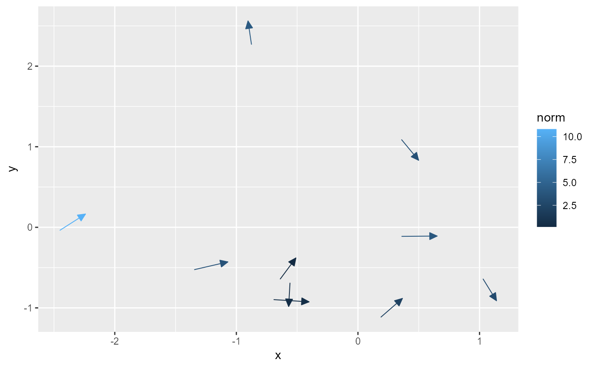

These functions provide convenient ggplot2 layers for drawing vectors.
Usage
stat_vector(
mapping = NULL,
data = NULL,
geom = GeomStream,
position = "identity",
...,
na.rm = FALSE,
show.legend = NA,
inherit.aes = TRUE,
center = TRUE,
normalize = TRUE,
tail_point = FALSE,
eval_point = FALSE,
arrow = grid::arrow(angle = 25, length = unit(0.025, "npc"), type = "closed")
)
StatVector
geom_vector2(
mapping = NULL,
data = NULL,
stat = StatVector,
position = "identity",
...,
na.rm = FALSE,
show.legend = NA,
inherit.aes = TRUE,
center = FALSE,
normalize = FALSE,
tail_point = TRUE,
eval_point = FALSE,
arrow = NULL
)
stat_vector2(
mapping = NULL,
data = NULL,
geom = GeomStream,
position = "identity",
...,
na.rm = FALSE,
show.legend = NA,
inherit.aes = TRUE,
center = FALSE,
normalize = FALSE,
tail_point = TRUE,
eval_point = FALSE,
arrow = NULL
)Arguments
- mapping
A set of aesthetic mappings created by
ggplot2::aes(). Required:xandymust always be provided. In addition, eitherxendandyendorangleanddistancemust be supplied.- data
A data frame containing the vector data in wide format.
- geom
The geometric object used to draw the streamline. Defaults to ggplot2::GeomPath in
geom_stream(), or GeomStream instat_stream().- position
Position adjustment, either as a string or the result of a call to a position adjustment function.
- ...
Other arguments passed on to
ggplot2::layer().- na.rm
Logical. If
FALSE(the default), missing values are removed with a warning.- show.legend
Logical. Should this layer be included in the legends?
- inherit.aes
Logical. If
FALSE, overrides the default aesthetics rather than combining with them.- center
Logical. If
TRUE, the vector is recentered so that the original (x, y) becomes the midpoint of the vector. Default isFALSE.- normalize
Logical. If
TRUE, the vector endpoints are adjusted so that each vector has unit length.- tail_point
Logical. If
TRUE, a point is drawn at the tail (i.e., the starting point) of each vector. This can help to indicate the origin of the vector. Default isFALSE.- eval_point
Logical. If
TRUE, a point is drawn at the evaluation point, corresponding to the original (untransformed) seed point before any centering or normalization is applied. This allows for comparison between the original and transformed positions. Default isFALSE.- arrow
An optional
grid::arrow()specification to add arrowheads to the vectors (default:grid::arrow(angle = 25, length = unit(0.025, "npc"), type = "closed")).- stat
The statistical transformation to use on the data for this layer. Defaults to StatVector.
Details
They accept wide-format data with the aesthetics x and y plus either
(xend, yend) or (angle, distance). If the latter is supplied, the
endpoints are computed as a translation of the starting point using polar
coordinates (assuming the angle is in degrees). The data is then converted
into long format (two rows per vector) using StatVector and plotted using
GeomStream. Directional arrowheads can be added to indicate the vector
direction.
Two variants are available:
geom_vector() creates the layer with the user-supplied aesthetic mapping.
geom_vector2() uses the same underlying stat (StatVector) but adds a default mapping for
length = after_stat(norm)so that the computed vector norm is available as an aesthetic.
Examples
# Basic usage with explicit start and end points:
vectors1 <- data.frame(
x = c(0, 1, 2),
y = c(0, 1, 2),
xend = c(3, 1, 5),
yend = c(0, 5, 6)
)
ggplot(vectors1, aes(x = x, y = y, xend = xend, yend = yend)) +
geom_vector()

# Basic usage with angle and distance:
vectors2 <- data.frame(
x = c(0, 1, 2),
y = c(0, 1, 2),
angle = c(0, pi/2, pi/4),
distance = c(3, 4, 5)
)
ggplot(vectors2) +
geom_vector(aes(x = x, y = y, angle = angle, distance = distance))
 # Using center = TRUE to adjust vectors so that they originate from their midpoints:
ggplot(vectors1, aes(x = x, y = y, xend = xend, yend = yend)) +
geom_vector(center = TRUE)
# Using normalize = TRUE to adjust vectors to have unit length:
ggplot(vectors2, aes(x = x, y = y, angle = angle, distance = distance)) +
geom_vector(normalize = TRUE)
# Using geom_vector2, which adds a default mapping for length:
ggplot(vectors1, aes(x = x, y = y, xend = xend, yend = yend)) +
geom_vector2()
# Using center = TRUE to adjust vectors so that they originate from their midpoints:
ggplot(vectors1, aes(x = x, y = y, xend = xend, yend = yend)) +
geom_vector(center = TRUE)
# Using normalize = TRUE to adjust vectors to have unit length:
ggplot(vectors2, aes(x = x, y = y, angle = angle, distance = distance)) +
geom_vector(normalize = TRUE)
# Using geom_vector2, which adds a default mapping for length:
ggplot(vectors1, aes(x = x, y = y, xend = xend, yend = yend)) +
geom_vector2()